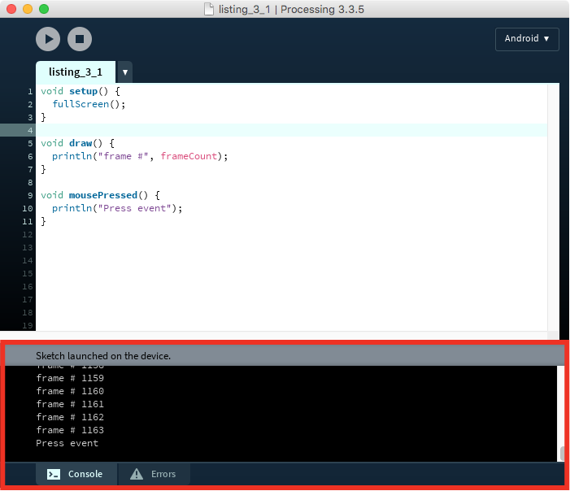
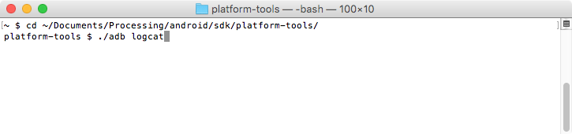
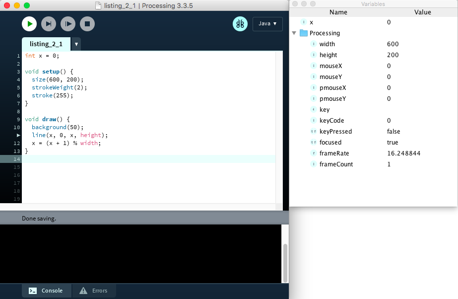
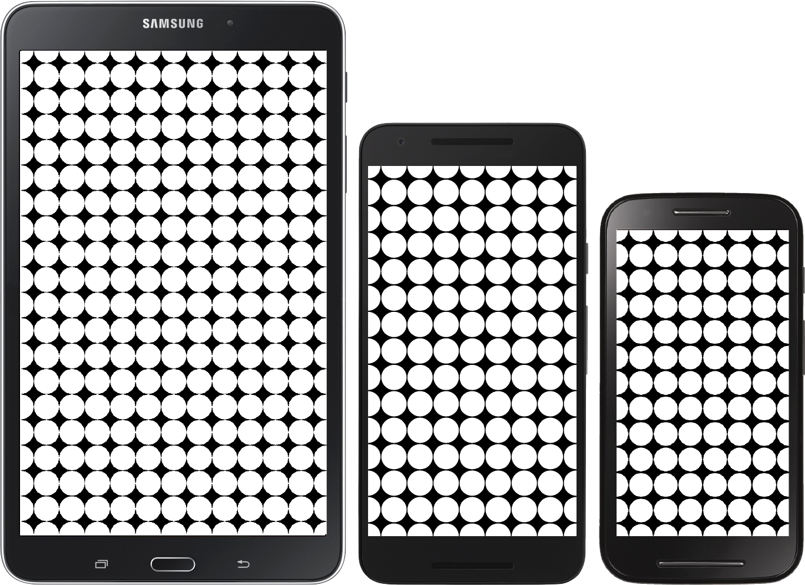
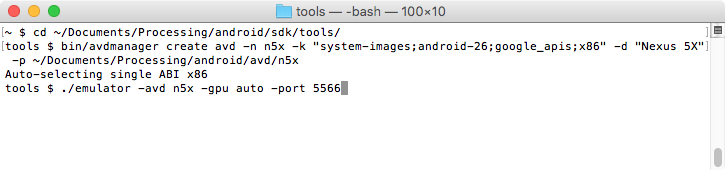
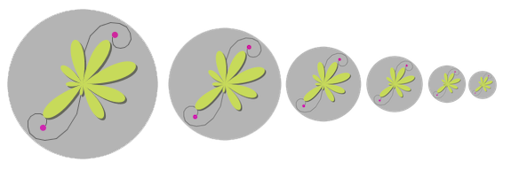
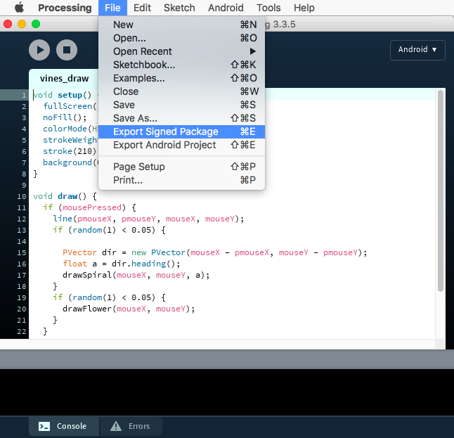
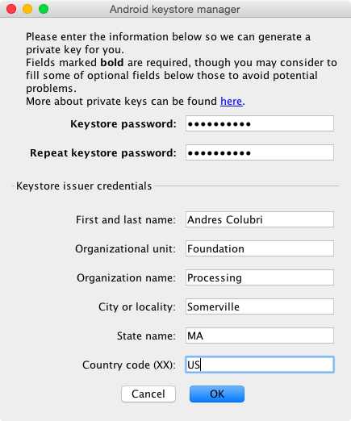
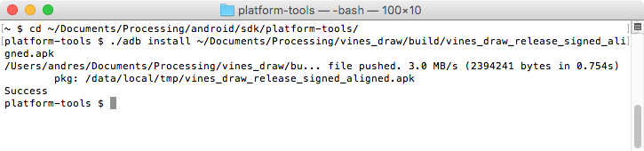

Chapter 3: From Sketch to Play Store
Here we will go through all the steps involved in the creation of a Processing project, from sketching and debugging to exporting the project as a signed app ready for upload to the Google Play Store. We will use the drawing sketch from last chapter as the example project to upload to the store.
Sketching and debugging
In the previous chapters, we emphasized the importance of “code sketching”, where immediate visual output and quick iteration are central elements to the development of Processing projects. Another crucial component is the identification and resolution of errors or “bugs” in the code, a process called debugging.
Debugging can take us as much time as writing the code itself. What makes debugging challenging is that some bugs are the result of faulty logic or incorrect calculations, and because there are no typos or any other syntactical errors in the code, Processing is able to run the sketch. Unfortunately, there is no foolproof technique to eliminate all bugs in a program, but Processing provides some utilities to help us with debugging.
Getting information from the console
The simplest way to debug a program is printing the values of variables and messages along various points of the execution flow of the program. Processing’s API includes text-printing functions, print() and println(), which output to the console area in the PDE. The only difference between these two functions is that println() adds a new line break at the end, while print() does not. Listing 3-1 shows an sketch using println() to indicate the occurrence of an event (a mouse press in this case), and the value of built-in variable.
Listing 3-1. Using println() in a sketch to show information on the console
void setup() {
fullScreen();
}
void draw() {
println("frame #", frameCount);
}
void mousePressed() {
println("Press event");
}
Processing’s console shows anything that is printed with these functions, but also warning or error messages indicating a problem in the execution of the sketch (Figure 3-1).

Figure 3-1. PDE’s console outlined with red
The main problem of printing messages to the console for debugging is that it requires adding these additional function calls for each variable we want to keep track of. Once we are done with debugging, we need remove or comment out all these calls, which can become cumbersome for large sketches.
Getting more information with logcat
We can obtain a lot of useful information from the Processing console, but sometimes this may not be enough to find out what is wrong with our sketch. The Android SDK includes a number of command line tools that can help us with debugging. The most important SDK tool is adb (Android Debug Bridge), which makes possible the communication between the computer we are using for development, and the device or emulator. In fact, Processing uses adb under the hood to query what devices are available, and to push the sketch to the device or emulator when running it from the PDE.
We can also use adb manually, for example to get more detailed debug messages. In order to do so, we need to open a terminal console, and once in it we would need to change to the directory where the Android SDK is installed. In case the SDK was automatically installed by Processing, it should be located inside the sketchbook folder, android/sdk subfolder. Within that folder, the SDK tools are found in platform-tools. Once there, we can run the adb tool with the logcat option, which prints out the log with all the messages. For instance, Figure 3-2 shows the sequence of commands we would need on Mac to run logcat.

Figure 3-2. Terminal session on Mac displaying the commands to run logcat
By default, logcat prints all messages generated by the Android device or emulator, not only from the sketch we are debugging, but from all processes that are currently running, so we might get too many messages. The print messages from Processing can be displayed if using logcat with the –I option. Logcat has additional options to only show error messages (-E) or warnings (-W). The full list of options is available on the Google’s developer site (https://developer.android.com/studio/command-line/logcat.html).
Using the integrated debugger
The Java mode in Processing 3.0 introduced an integrated debugger that makes easier for us to keep track of the internal state of a running sketch. Even though the debugger is not available in the Android mode, we can still use it to debug Android sketches. If a Processing sketch does not rely on Android-specific functionality, then it should be compatible between Android and Java modes, since the code API is (almost) identical between the two modes. In that case, we can momentarily switch to the Java mode to take advantage of its debugger and then come back to the Android mode to continue working on the device or emulator.
We turn the debugger on by pressing the button with the butterfly icon on the left of the menu bar, next to the mode selector, or selecting the “Enable Debugger” in the Debug menu. Once enabled, we can access a number of additional options in the PDE to use when the sketch is running. For example, we can add “checkpoints” to any line in the code of our sketch. A checkpoint signals where the execution of the sketch should stop to allow us inspecting the value of all the variables in the sketch, both user-defined and built-in.
We can create a new checkpoint by double clicking on the line number in the left margin of the code editor. A diamond sign will indicate that the line has flagged with a checkpoint. When we run a sketch containing one or more checkpoints, Processing will stop execution when it reaches each checkpoint, at which moment we can inspect the value of the variables using the variable inspector window (Figure 3-3). We resume execution by pressing the continue button on the toolbar. We can also step line by line by pressing the Step button, and see how each variable changes its value after each line.

Figure 3-3. Debugging session with the integrated debugger in the Java mode
All of this functionality in the integrated debugger could help us identify bugs in the code without the need of adding print instructions, although fixing a tricky bug is always challenging and can take a long time even with the debugger. At the end, it comes down to carefully understanding the logic of the code in the sketch and its possible consequences and edge cases, based on information we get from the debugger or print instructions. In this way, we can narrow down the portion of the code where the bug is likely to be.
Reporting Processing bugs
Sometimes an unexpected or erroneous behavior in a Processing sketch may be due not to a bug in the sketch itself, but in Processing’s core. If you have strong suspicion that you have found a Processing bug, you can report it in the GitHub page of the project. If it is a bug affecting the Android mode, open a new issue in the processing-android repository at https://github.com/processing/processing-android/issues, and include as much information as possible to reproduce the bug and to help the developers examine the issue and eventually fix it.
Preparing a sketch for release
After debugging a sketch in the PDE, we may want to package it for public release through Google Play Store. When working from the PDE, Processing creates a debug app package that can only for installed on our own device for testing purposes. Creating a app suitable for general distribution from our sketch requires some additional steps and considerations to make sure it can be uploaded to the Play Store.
Adjusting for device’s DPI
A first step to ready our sketch for public release is to make sure that it can be run on (most) of the Android devices in use. When writing and debugging our sketch, it is often the case that we work with one or only a few different devices, so it may be hard to anticipate issues on hardware we do not have access to. A common situation is that the graphics might look either too big or too small when running our Processing sketches on different devices. The reason for this is that both resolution (number of pixels) and physical screen size can vary quite substantially across phones, tablets and watches, and so graphic elements designed with one resolution in mind and viewed on a screen of a particular size will likely look wrong on another. Since Android is designed to support various combinations of screen sizes and resolutions, we need a way in Processing to adapt the visual design of our sketch so it looks as intended across different devices.
The ratio of the resolution to the screen size gives us what is called the DPI (dots per inch, which in the context of computer screens is equivalent to pixels per inch, or PPI). The DPI is the basic magnitude to compare across devices. It is important to keep in mind that a higher DPI does not necessarily mean a higher resolution, since two different devices with the same resolution may have different screen sizes. For example, the Galaxy Nexus (4.65" diagonal) has a 720 × 1280 pixels resolution, while the Nexus 7 (7" diagonal) has an 800 × 1280 pixels resolution. The DPIs of these devices are respectively 316 and 216, even though the resolution of the Galaxy Nexus is actually slightly lower than that of the Nexus 7.
Android classifies devices in density buckets according to the following six generalized densities (a specific device will fall in one of these categories depending on which one is closest to its actual DPI):
- ldpi (low) ~120dpi
- mdpi (medium) ~160dpi
- hdpi (high) ~240dpi
- xhdpi (extra-high) ~320dpi
- xxhdpi (extra-extra-high) ~480dpi
- xxxhdpi (extra-extra-extra-high) ~640dpi
The generalized density levels are important in Processing to generate the app icons, as we will see later in this chapter, but not so much when writing our code. In order to make sure that the visual elements in our sketch scale properly across different devices, there is another parameter from Android that Processing makes available through its API. This is the “display density”, a number that represents how much bigger (or smaller) is the pixel in our device when compared with a reference 160 DPI screen (for example a 320x480, 3.5" screen). Thus, on a 160 DPI screen this density value will be 1; on a 120 DPI screen it would be .75; etc.
The display density is available in Processing as the constant named displayDensity, which we can use from anywhere in our code. The simplest way of adjusting the output to the device’s DPI is to multiply the size of all of the graphical elements in the sketch by displayDensity, which is the approach in Listing 3-2. As we can see in Figure 3-4, the size of the circles drawn by the sketch is the same across devices with different DPIs. Also, this example uses fullScreen() to initialize the size of the output of our sketch to the entire screen, regardless of its resolution.
Listing 3-2. Using displayDensity to adjust our sketch to different screen sizes and resolutions
void setup() {
fullScreen();
noStroke();
}
void draw() {
background(0);
float r = 50 * displayDensity;
int maxi = int(width/r);
int maxj = int(height/r);
for (int i = 0; i <= maxi; i++) {
float x = map(i, 0, maxi, 0, width);
for (int j = 0; j <= maxj; j++) {
float y = map(j, 0, maxj, 0, height);
ellipse(x, y, r, r);
}
}
}

Figure 3-4. From left to right, output of our sketch on a Samsung Galaxy Tab 4 (7”, 1280x800 px, 216 dpi), Nexus 5X (5.2”, 1920x800 px, 424 dpi),and a Moto E (4.3”, 960x540 px, 256 dpi)
We can return now to our vines drawing sketch from the last chapter, and add displayDensity in the parts of the code where we need to scale the graphics. More specifically, any variable or value that represents the size of shapes or position of vertices on the screen should be multiplied by displayDensity. Listing 3-3 shows these changes applied to the original drawing sketch.
Listing 3-3. Adding displayDensity to the vine drawing sketch from Chapter 2
void drawFlower(float xc, float yc) {
pushMatrix();
pushStyle();
noStroke();
translate(xc, yc);
fill(random(60, 79), random(50, 60), 85, 190);
beginShape();
int numLobes = int(random(4, 10));
for (int i = 0; i <= numLobes; i++) {
float a = map(i, 0, numLobes, 0, TWO_PI);
float a1 = map(i + 1, 0, numLobes, 0, TWO_PI);
float r = random(10, 50) * displayDensity;
...
}
}
void drawSpiral(float xc, float yc, float a) {
pushMatrix();
pushStyle();
translate(xc, yc);
rotate(PI + a);
noFill();
beginShape();
float maxr = random(20, 70) * displayDensity;
...
fill(random(310, 360), 80, 80);
float x1 = (maxr/maxt) * cos(sign * maxt) - x0;
float y1 = (maxr/maxt) * sin(sign * maxt) - y0;
float r = random(5, 10) * displayDensity;
ellipse(x1, y1, r, r);
popStyle();
popMatrix();
}
Using the emulator
We briefly discussed the emulator in the first chapter. Even when we have our own device, the emulator could be useful, because it allows us to test hardware configurations we do not have access to. Processing creates a default Android Virtual Device (AVD) to run in the emulator, but with a resolution of only 480x800 pixels to ensure a reasonable performance across different computers. We can create other AVDs with different properties to test our sketches on, using the command line tool avdmanager, included in the Android SDK. We have to keep in mind that the emulator will likely run slower than an actual device, especially if creating high-resolution AVDs or with other high-end capabilities.
Since avdmanager is a command line tool, we first need to open a terminal console, change to the tools directory where avdmanager and also the emulator launcher are located inside the SDK folder. Figure 3-5 shows the sequence of steps to create a new AVD using the device definition for a Nexus 5X phone, and then launching this AVD with the emulator

Figure 3-5. Creating and launching a new AVD from the command line using the avdmanager and emulator tools
In the line running the avdmanager command, we provided four arguments:
- -n n5x: The name of the AVD, which could any name we wish to use.
- -k “system-images;android-26;google_apis;x86”: The SDK package to use for the AVD, to find out which SDK packages are available in our SDK, we need to look at the system-images subfolder inside the SDK folder.
- -d: “Nexus 5X”: A device definition containing the hardware parameters of the device we want to emulate. We can list all the available device definitions by running the command ‘./avdmanager list devices’
- -p ~/Documents/Processing/android/avd/n5x: The folder where will store this AVD, in this case we are using “android/avd/n5x” inside the sketchbook folder, since this is the default location the Android mode uses for the default AVDs.
The next line in Figure 3-5 actually launches the emulator, but before doing that, we need to set up the AVD’s “skin” telling the emulator the actual dimensions it should render the phone screen at. Currently, the avdmanager does not have an option to set the device skin, but we can add it manually to the AVD’s configuration file, which in this example, is located inside the “~/Documents/Processing/android/avd/n5x”, and named “config.ini”. We can open this file with any text editor, and then add the line “skin.name=widthxheight” at the end, using the width and height of the device, although we can also use other values of our preference, as shown in Figure 3-6.

Figure 3-6. Adding a skin resolution to the AVD’s config.ini file
Once we have added the skin resolution to the config.ini file of our AVD, we can run the emulator line shown before, which includes the following arguments:
- -avd n5x: The name of the AVD we want to launch.
- -gpu auto: Enables the emulator to use hardware acceleration on the computer to render the AVD’s screen faster, if it is available. Otherwise, it will use a slower software renderer.
- -port 5566: Sets the TCP port number to connect the console and adb with the emulator.
In order to use our new AVD in place of Processing’s default, we should launch it manually as we did in this example, and then Processing will install our sketches in it instead of the default AVD. However, we need to make sure to use the right port parameter, because Processing will only be able to communicate with phone emulators running on port 5566, and watch emulators on port 5576.
Setting icons and package name
Android apps require icons of various sizes to be displayed at different pixel densities in the app launcher menu. Processing uses a set of default, generic icons when running a sketch from the PDE, but these icons should not be used for a public release.
In order to add our own icons to the project, we need to create the following files: icon-36, icon-48, icon-72, icon-96, icon-144, and icon-192 in .PNG format, for the ldpi (36x36), mdpi (48x48), hdpi (72x27), xhdpi (96x96), xxhdpi (144x144), and xxxhdpi (192x192) resolutions. Once we have these files, we must place them in the sketch's folder before exporting the signed package.
For the vine drawing app from the last chapter, we will use the set of icons shown in Figure 3-7.

Figure 3-7. Set of icons for the vine drawing app
Google has published a set of guidelines and resources for icon creation, according to their material UI style, available here.
Setting package name and version
Apps in the Google App Store are uniquely identified by a package name, which is a string of text that looks something like com.example.helloworld. This package name follows the Java package-naming convention, where the app name (helloworld) is last, preceded by the website of the company or person developing the app in reverse order (com.example).
Processing constructs this package name automatically by prepending "processing.test" to the sketch name. We can change the default package name by editing the manifest.xml file that Processing generates in the sketch folder after we run it for the first time from the PDE (either on a device or in the emulator). We can also set the version code and version name. For example, in the following manifest file generated by Processing, the package name is com.example.vines_draw, the version code 10, and version name 0.5.4:
<?xml version="1.0" encoding="UTF-8"?>
<manifest xmlns:android="http://schemas.android.com/apk/res/android"
android:versionCode="10" android:versionName="0.5.4"
package="com.example">
<uses-sdk android:minSdkVersion="17" android:targetSdkVersion="25"/>
<application android:icon="@drawable/icon"
android:label="Vines Draw">
<activity android:name=".MainActivity"
android:theme=
"@style/Theme.AppCompat.Light.NoActionBar.FullScreen">
<intent-filter>
<action android:name="android.intent.action.MAIN"/>
<category android:name="android.intent.category.LAUNCHER"/>
</intent-filter>
</activity>
</application>
</manifest>
Note that our app’s package name must be unique, since there cannot be two apps on the Google Play Store with the same package name. Also, we should set the application name by using the android:label attribute in the application tag. Android will use this label as the visible title of the app in the launcher and other parts of the UI.
Exporting as a Signed Package
Android Mode simplifies the publishing of our sketch by signing and aligning the app so we can upload it to the Google Play Developer Console very easily. The signing process involves creating a public-key certificate that contains the public key of a public/private key pair, so that when the app package is signed, it embeds a unique fingerprint that associates the package with its author. This ensures that any future updates of the app are authentic and come from the original author. The alignment is required to optimize data storage inside the package, which reduces the amount of RAM consumed when running the application. While Processing will do the signing and alignment for us, we still need to create a Google Play Developer account to use the Play Console, which requires paying a one-time fee of $25 at the time of this writing and as detailed here. From Processing, all we need to do is select the “Export Signed Package” option under the File menu (Figure 3-8).

Figure 3-8. “Export Signed Package” option in the PDE’s File menu
After selecting this option, Processing will ask to create a new keystore to save the release key to sign the app package. The keystore requires a password and additional information about the keystore issuer (name, organization, city, state, country), although those are optional. The Keystore Manager window that allows us to enter all this information is displayed in Figure 3-9.

Figure 3-9. Entering the information needed to create a keystore in Processing
Remember this password, as you will have to use it every time you export a new signed package. Even though you could reset it and create a new key, you should keep in mind that you cannot change keys once an app is uploaded to the Play Store—any subsequent updates to the app need to be signed by the same key as the original, or else it will be denied, and you will have to create a new package with a new key.
The signed (and aligned) package will be saved in the build subfolder inside the sketch’s folder, under the name [Sketch name in lowercase]_release_signed_aligned.apk. Once we have this package, we can follow the instructions from Google to complete the app-publishing process.
If we follow all these steps with our vine-drawing sketch, we should be able to generate a signed and aligned package that is ready to upload to the Play Store. We can also install it manually on our device using the adb tool (see Figure 3-10).

Figure 3-10. Installing a signed package from the command line using adb
If we install the final app package either manually or through the Play Store, we should see it in the app launcher with the icon we created for it (Figure 3-11).

Figure 3-11. The vine-drawing app installed on our device
Summary
This final chapter in the first section of the book covered a number of more technical topics, ranging from debugging our code using Processing’s console, the integrated debugger, or the logcat option in adb, scaling the output of our sketches according to the device’s DPI, and finally exporting our sketch as signed package to upload to the Play Store. With these tools, we are ready to share our creations with all the Android users around the entire world!